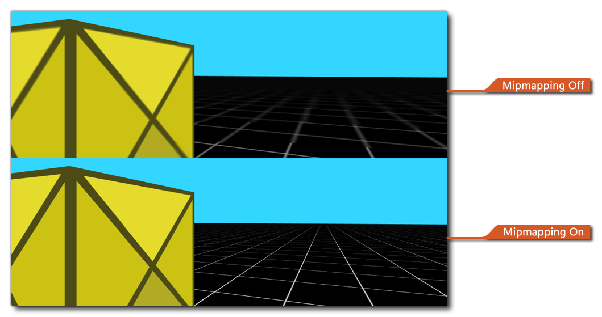

Esta sección contiene todas las funciones relacionadas con el uso de las funciones de mipmapping. Antes de usar estas funciones, debe haber habilitado mipmapping para las páginas de texturas requeridas en el Editor de grupos de texturas y / o habilitado el mipmapping para aquellos sprites que se han configurado para usar solo una página de textura única de las Opciones generales de juego. La siguiente imagen muestra la diferencia que puede hacer mipmapping al renderizar su proyecto: 
Una vez que haya habilitado el mipmapping para el proyecto o una página de texturas, puede usar las siguientes funciones para obtener y establecer valores que cambiarán el aspecto de las cosas en su proyecto cuando se ejecute:
Las funciones enumeradas a continuación se pueden utilizar para obtener los diferentes valores asociados con mipmapping en GameMaker Studio 2:
Las funciones enumeradas a continuación se pueden usar para establecer los diferentes valores asociados con mipmapping en GameMaker Studio 2: